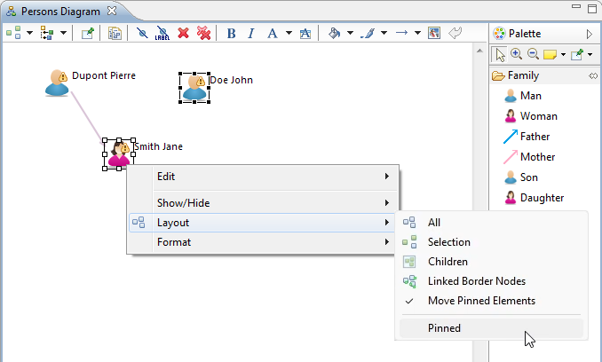
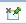

This document explains how to use diagram editors/modelers supported by Sirius which allow to view and manipulate data in a graphical way.
Sirius provides support for diagrammatic representations, which represent information in a graphical way. Diagrams are the main and most sophisticated type of representations supported by Sirius.
A diagram editor is divided in three areas:

In addition to these areas which are immediately visible inside the diagram editor, it is also possible to interact with the diagram and its elements through the Properties View and through contextual menus available on the graphical elements themselves and on the diagram’s background. When the current editor is a Sirius diagram, the Eclipse Outline view shows a graphical overview of the diagram which can be used to navigate inside it if the whole diagram is not visible in the main area.
This document is structured in three parts. The first part gives an overview of all the main features, and is organized from a functional perspective. For example it contains a section which explains the different ways available to control which elements are hidden or not on a diagram, with links to the corresponding parts of the reference section. The second part is a reference and describes all the features available by looking at each of the main areas of the diagram editors (the palette, the tab-bar etc.). Finally, the last part gives a reference on all the preferences and configuration parameters which can affect the look and feel of diagrams.
Note that as always with Sirius, some of the features described below may or may not be available with all specific kinds of diagrams. It all depends on which features the person who specified (configured) the diagram decided to support. For example, the names and effect of the tools available in the palette will be different for each graphical modeler. Refer to the documentation of the specific modeler if available for more precise details.
Creating new diagrams works in the same as for any other kinds of representation in Sirius. There are three main ways:
Note that the set of diagrams you can create will depend both on the type of the selected element and on the set of viewpoints which are currently enabled.
When you create a new diagram, unless you have unchecked the Synchronized mode for new diagrams preference, it will be initially populated with graphical elements according to its configuration and the current state of the semantic model(s) it represent. If the preference is checked, the diagram will be created empty, and only the elements you ask explicitly to be represented (through tools, which will be specific to each kind of diagram) will appear on the diagram.
Opening existing diagrams and renaming or deleting them works exactly as for any other kind of representation. Refer to the general documentation about the Modeling Project UI for details.
Several behaviors concerning the diagram elements editing is conditioned by properties of the diagram accessible through the
Rulers & Grid tab of the
Properties view of the diagram.

Display/Show Ruler: Display an horizontal and vertical ruler according to Measurement/Ruler Units property.
Display/Show Grid: Display a grid in background of the diagram according to Measurement/Grid Spacing and Grid Line properties. This grid can be in front of all figures if the property Grid In Front is enabled.
Capability to allow edit parts to snap to the grid when editing (during creation, moving or resizing). It is also possible to have connection bendpoints snap to it. Grid snapping and visibility are two distinct properties, and it is possible to enable one without the other.
The
Snap to shapes feature allows you to quickly align parts being dragged or resized to other parts in the diagram or that share the same parent (e.g: edit parts inside a compartment can only snap to each other). The snap is effective on top, bottom, right, left and center of the figure. Feedback is shown in the form of a gray line when a part is being attached to another part.
This drag part of this feature is also available on border nodes since Sirius 4.1.0. Note: For border nodes, the snap is effective only on the center of the figure. This is why the resize part is not handled for border nodes.

By pressing the


When the diagram is larger than the editor area, you can move it in all directions by pressing the middle-button and dragging the mouse (keeping the button pressed).
The zoom on a diagram can be done by using the tools in the palette like explained in
Chapter Standard Tools.
Or by using the combination of the keyboard key
CTRL and the mouse wheel. Since Sirius 4.1.0, in this case, the zoom is done on the mouse location instead of the center of the editor.
If the specifier has authorized it, it is possible to resize a shape by dragging them until they are the size that you want.
There are specific shortcuts to change the resize behavior:
The resize of compartments might evolve in future versions. The current behavior is to redistribute space between adjacent compartments and to resize the first/last compartment when the compartmented container is resized from top/bottom for a vertical stack and left/right for an horizontal one.
When resizing a compartmented container or a compartment from the top or from the left, the F3 shortcut configures the same behaviors than on standard containers (see previous section).
On experimental structures of containers with compartmented compartments, the F3 shortcut also allows to disable the resize propagation to manually correct the computed layout and remove empty space ( experimental). This might occur when there are several levels of compartments without the same number of compartments on each level. The corrective resize can be done on the last compartments of each compartmented container (from bottom for vertical stacks and from right for horizontal stacks).
There are specific shortcuts to change the move behavior:
All visible edge labels can be snapped back to their default position by using the action
Snap back label(s). This action is available within the edge contextual menu under the format section
Format/Snap back label(s):

The result of this action is visible here:

This action is also available individually for each visible label of an edge. To use it, you have to use the action
Snap Back under the label contextual menu
Format/Snap Back:

The result of this action is visible here:

It is possible to snap the bend-points to all shapes by pressing
You can define some bend-points (or inflection points) on an edge. It is possible to remove bend-points to retrieve simple edge.
For oblique edges, all bend-points will be removed to retrieve the original Straight edge.
The edge state just after its creation:

The user defines some bend-points:

The user executes the “Remove Bend-points” action:

For rectilinear edges, bend-points will be removed to retrieve a rectilinear edge with source and target connection points centered on the middle of the source or target node appropriate side. One additional bend-point is inserted if source side and target side are in opposite direction. Two intermediates bend-points are inserted if source side and target side are in the same direction.
If number of bend-points can not be reduced, remove action will be inefficient (for example, case when the rectilinear edge is straight).
The rectilinear edge after defining some bend-points:

The user executes the “Remove Bend-points” action:

This action is available within the edge context menu or by using the shortcut “Ctrl” + “Shift” + “-” and it is not available on edges with a “Tree” routing style.
There are eight actions to straighten an edge, i.e. to transform an edge to an horizontal, or vertical, straight edge (with only one starting point and one ending point).
If the edge is connected to a border node, the border node is moved too.
These actions can be triggered on edge contextual menu Layout/Straighten:

and also in the tabbar if at least one edge is selected:

There are two distinct kinds of straightening actions. The following examples show how they can be used.
Example for horizontal cases of result with the same initial state (the moved nodes are in red):


Example of initial state of vertical cases:


The action can be disabled (grayed menu) in some conditions:
The action is available (menu is displayed) if the selection contains at least one edge (note, labels and text attachments are not considered as edges). The menu will show all actions available for all edges in the selection. So if a straighten to top is available on one edge and straighten to left on another, both action will be available. Their execution will only affects the edges compatible with it.
The straighten actions can be triggered on one edge but also in case of a multi-selection containing more than one edges.
In this case the straighten actions available will be the union of actions available for each edges of the selection. I.e if an edge can be only straighten to top and another edge in the selection can be only straighten to top, then available actions on the selection of both edges will be both the top and left actions.
When executing a straighten action, only edges from the selection that can be affected by this action will be impacted (if a constraint prevent an edge to be straighten to the direction of the executed action, then it is untouched).
In specific cases, we can find edges connected to border nodes. For example in a diagram representing data flows, exchanges are connected to port in and port out. When the user wants to move an exchange on a layouted diagram, he has to move the source port, then the target port and possibly move some bendpoints of the edge.
This feature aims to move the group {edge, labels, ports} in a single
drag like operation when using the F3 shortcut and drag/move the edge. The F3 key has no effect if you attempt a reconnect by moving the first or last edge end.
Example when activating the tool and moving the second edge toward the top:

The final result:

The edge group moving is authorized only if these conditions are met:
Examples of authorized moving:

Furthermore, since Sirius 4.1, it is possible to move several edge groups at once. However, the selection needs to validate the following rules:
Note that an edge group new location corresponding to the former location of another edge group in the selection is valid.
It is possible to display an attachment link between an edge and its labels when edge or label is selected. This is not the default behavior but it can be activated by a preference in Sirius/Sirius Diagram/Connections preference page.

If the edge is selected, one attachment is displayed for all associated labels.

If a label is selected, only the attachment between the edge and this label is displayed.

Four new actions allow to distribute shapes:


These new actions are also available in contextual menu Format/Distribute or in menu bar _ Diagram/Distribute_.
Only the top level shapes of the selection are retained for these actions: if inner shapes, border labels or edges are selected, they are ignored.
These actions are enabled only if the selected shapes have the same direct parent. At least 3 shapes should be selected to enable distribute actions.
For border nodes, they will be enabled only if all selected border nodes have the same parent and are on the same axis (top and bottom sides for horizontal actions, left and right for vertical actions). The overlap is forbidden for border nodes, so in some conditions (location already used), these actions may not have accurate results.
For all distribute actions, the first and the last shapes do not move. The first and last shapes do not depend on the selection order. They depend on the location of each selected shapes and the chosen action.
For horizontal distribution with uniform gaps:
For horizontal centered distribution:
For vertical distribution with uniform gaps:
For vertical centered distribution:
This action is available within the diagram or containers contextual menu (“Reset Origin”) or via “M1” + “HOME” shortcut.
The diagram (or container) bounds (the rectangle formed by the highest, the leftmost, the lowest and the rightmost elements) can have a negative origin or can be shifted toward the bottom-right with a blank zone at the top-left.
This action aims to move all diagram (or container) elements so that the diagram (or container) retrieves its origin while keeping the element layout.
This action can be launched on several containers at same time.
This is an example of a diagram with a blank zone between the origin location and the figures bounds:

After applying the action, the diagram figures are moved toward the top-left origin location:


After having scrolled the container, one of the edge end is masked so the edge is hidden. This one will be considered to compute the diagram bounds:

Every graphical element on a diagram except compartments can be hidden explicitly. To do that, simply right click on the graphical element (or elements if you want to hide several elements at once) you want to hide. Then, choose Show/Hide / Hide Element. The graphical element is now hidden from view.
The icon in the tool-bar changes showing a “check box” on it as soon as at least one element has been hidden, to remind you that what you see is not a complete view of the model being represented:


The element can also be hidden from the tool-bar using the Hide element button.

It is also possible to hide an element from the outline view. Choose outline mode to see the semantic model in a tree viewer. You can now right click on an element and choose Hide element.
There are two ways to reveal hidden elements:

When there is no selected element on the diagram, the tab bar provides the button Show/Hide.

This button opens a dialog to manage the shown and hidden elements on the diagram with a tree view, using various selection buttons (Check all, Uncheck all, Expand All and Collapse all) and various filters (All element, only checked elements and only unchecked elements).

Some elements might be grayed in this tree (compartments, Sequence diagram elements, ..), their selection will have no effect. Their grayed status indicates that they can not be hidden from the wizard but their children might support it.
You can also use regular expressions to easily retrieve the elements you want to hide/reveal.
It is also possible to hide the label of graphical elements (see the node labels section for nodes supported case).
The approach is the same as for other elements, except that there are a specific menus named “Hide/Show Label”. It is possible to call this menu directly on the label or on its element.

The tool-bar button Hide label can also be used.

It is also possible to hide or reveal a label from the outline view, in outline mode. The elements whose label is hidden have their names displayed in italic style and their icon is decorated with a L in the bottom right corner. To reveal a label, simply right click on it and choose Show label.

When there is no selected element on the diagram, Show/Hide tab bar button allows to manage the labels too.
Labels of containers, lists and compartment might be hidden by default. You can choose to display them using the outline, contextual menu or Show/Hide tree view.
It is possible to hide the node label only if it is on the border of its node. Those nodes can have their label hidden by default. You can choose to display them using the outline, contextual menu or Show/Hide tree view.
It is also possible to hide the edge labels.
The approach is the same than the nodes labels with the specific menus “Hide/Show Label” called from the edge or its label.

Note that if a label of an edge is hidden (center, begin or end), all the labels of the edge will be hidden. Same behavior for the reveal action, if a label of an edge is revealed (center, begin or end), all the labels of the edge will be revealed.
When working on big diagrams, you may want to hide the icons of the labels on all shapes or connectors, in order to improve the readability of your representations. To do so, open the Eclipse Preferences ( Window/ Preferences), and select the “Appearance” category ( Sirius/ Sirius Diagram/ Appearance).
The options "Hide label icons on shapes" and "Hide label icons on connectors" will allow you to do so.
By default, no shapes neither connectors are hidden :

If you check both " Hide label icons on shapes" and " Hide label icons on connectors", next time you will open your diagram, all label icons of shapes and connectors will be hidden :
When working with compartmented containers, you may want to collapse the compartments. Select a compartment and collapse/expand it using the handle visible on the following illustration. The collapse handle’s location varies depending on the label alignment to avoid overlapping (depending on the list elements alignment for a list with an hidden label).

On a diagram, you can have validation rules. These rules were previously created by the architect who created the diagram’s configuration. As a user of the modeler, you can validate these rules on your model.
To validate the rules open the context menu of the diagram itself (by right-clicking on its background) and choose the Validate action.

Filters are created by the architect who created the diagram’s configuration. Applying a filter on a diagram will hide the graphical elements which match the filter’s criterion. To apply a filter, open the Filters menu in the tab-bar to select which filters should be enabled or disabled.

To see more easily if one or more filters are activated, the icon in the tab-bar changes, showing a small check mark if at least one filter is activated.

You can export a diagram to an image file. To do that right-click on the diagram and choose the menu
Export diagram as image. or on this icon present in the tab-bar
 . After selecting the file path, you can choose the image format and if you want to overwrite an existing file without warning.
. After selecting the file path, you can choose the image format and if you want to overwrite an existing file without warning.

On the first export of diagram as image the name is set by default with the representation name. After there is an history to select the last export.

If you do not specify the file extension, the extension is determined from the selected image format. You can choose the directory in which to create the file using the Browse button.

If you enter a path with an unsupported extension the file path is created with the wrong extension with selected extension in image format append to.

Three checkboxes are available to customize the export:
.html file which references the exported image in addition to the image file itself.
Note: Due to some technical limitations, not all export format support all the features of diagrams. For example, exporting to PNG files will not show gradients on diagram elements. The JPG format is the one which currently produces the best result in terms of fidelity to what you see in the diagram editors.
It is possible to export all diagram of a representations file at once. To do that, select your representations file (
aird file) and right-click on it. Then choose the menu
Export diagrams as image.... On the opened pop-up select the path of the folder where the images will be exported.


The same functionality is available on every semantic elements which has representations from the Model Explorer view. In this case, only the diagrams of the selected element will be exported.

Drag and drop is a feature which can be enabled by the specifier in the Viewpoint Specification Model. It is turned off by default.
If the resize of the port is disabled by the specifier in the Viewpoint Specification Model, there is 4 selection handles to indicate the selection, one at each corner of the figure. Only the shifting is authorized.


If the resize of the port is enabled by the specifier in the Viewpoint Specification Model, there is more than 4 selection handles to indicate the selection. To shift the port, you should not click on one of this handles.


Ports are special shapes because they are linked to a parent container, but are sometimes laid out over two containers.
When you try to shift a port, if you click over the port at a location where it is not over the parent container, a virtual area is built around the parent container. This virtual area is not visible and its size is calculated to cover the container and the port itself.


The port shifting is protected against unexpected drag and drop in the container above mouse location.
If you want to drag and drop the port in a new container, just drag the port with the mouse beyond this virtual area (e.g., on screenshots, drag farther than right edge of port).


The port is dropped in the container above the mouse location and linked to its closest edge.
It is possible to duplicate format of diagram elements, that is to say to replicate mutual organization and style of diagram elements from one diagram to another. This replication only applies to the same semantic elements between diagrams.
By default, this copy/paste replicates the layout (x, y width and height) AND the style (colors, font, ...).
But it is also possible to only Paste Layout or only Paste Style. The initial copy is always a Copy Format in all cases.
The next picture shows a partial view of a diagram. The tool to replicate the format is called “Copy Format” and can be activated from the tab-bar when the diagram elements are selected, from the contextual menu (see Edit section) or through the Ctrl+Alt+Shift+C shortcut. In this picture, format of John Doe and Earvin Johnson persons will be replicated to another diagram.

The next picture shows the diagram where the layout will be replicated. The tool to paste layout is called “Paste Layout” and can be activated from the tab-bar or from the contextual menu (see Edit section).

The layout applies to John Doe and Earvin Johnson and is exactly the same as the original one (compare John Doe and Earvin Johnson each other positions with first screenshot).

Warning : This copy/paste operation copies exactly what you see on a diagram. When using low zoom level, some diagram elements can be twisted and the paste operation will duplicate theses twistings on the other diagram. Please, zoom in to reduce twistings.
The next picture shows the diagram where the layout will be replicated. The tool to paste style is called “Paste Style” and can be activated from the tab-bar or from the contextual menu (see Edit section).

The red font applies to John Doe.

The next picture shows the diagram where the layout will be replicated. The tool to paste format is called “Paste Format” and can be activated from the tab-bar when the diagram is selected, from the contextual menu (see Edit section) or through the Ctrl+Alt+Shift+V shortcut.

The result is the same as applying Paste Format and Paste Style.

It is possible to mark specific elements in a diagram as having a fixed location so that they are not moved by the Arrange All action.
Diagram element pinning allows you to combine both methods: manually arranging the position and size of elements when it is important while still being able to call Arrange All for the rest, without the risk of destroying your manual layouts.
The next picture shows a diagram with three persons.

Arrange All action lays out all diagram elements in order to produce the “best” layout. As we can see on the next picture, all diagram elements are moved.

But we would like to have a fixed location for John Doe and Jane Smith. So theses elements must be marked as pinned thanks to the contextual menu.

Now John Doe and Jane Smith are pinned, a new Arrange All action will preserve their locations.

It is also possible to pin/unpin diagram elements thanks to the palette. Multiple element selections can be achieved by holding simultaneously Ctrl + Mouse-left-click on each diagram elements to pin or unpin.

Notes:
Every diagram elements that you move will be pinned by default and will need an unpin operation to be “moveable” again.
This default behavior can be changed in Eclipse preferences, as can be seen in the next picture.

The notes can be pinned if they are attached to a pinned diagram element. If a note is attached to several elements of which at least one is pinned then the note is pinned.
Otherwise for notes linked to any elements, it’s possible to use the preferences “Move unlinked notes during layout”. By default, this preference is disabled, in this case the unlinked notes are pinned.
This default behavior can be changed in Eclipse preferences, as can be seen in the next picture.

When there is no selected element on the diagram, the tab bar provides the button Pin/Unpin.

This button opens a dialog to manage the pinned and unpinned elements of the diagram with a tree view, using various selection buttons (Check all, Uncheck all, Expand All and Collapse all) and various filters (All element, only checked elements and only unchecked elements).

Some elements might be grayed in this tree (compartments, Sequence diagram elements, ..), their selection will have no effect. Their grayed status indicates that they do not support the Pin/Unpin but their displayed children might support it. Edges will not be shown as they will never have children in this tree.
You can also use RegularExpressions to easily retrieve the elements you want to pin/unpin.
To see more easily if one or more graphical elements are pinned, the icon in the toolbar change, showing a “checked” if an element is pinned.

When you only want to do layout operations (e.g. arrange a diagram by moving nodes or edges), you may modify the semantic models without paying attention. For example, when organizing bordered nodes, you may change the container of the semantic element, without wanting do so.
When this mode is enabled, the following operations are changed:
Note that other operations which can change the semantic model are still possible. Only the operations listed above, which are easy to misuse, are disabled/modified. Layout Mode is not a “read-only” mode and does not guarantee that the semantic model is not modified when it is enabled.
Layouting mode can be activated/disabled on a diagram through the tab bar (when there is no selected element) :

The diagram’s status line then indicates that the diagram is currently in Layouting mode :

In this example, as Layouting mode is activated, reconnecting the Edge from Abstrat Customer to Company is forbidden. You can arrange this edge (change start location, add bending points...) without risking to modify the underlying semantic model.
When a diagram is closed, the Layouting mode is automatically disabled.
The contextual menu on the background of the diagram provides an action to toggle between Synchronized / Unsynchronized modes.

When the action is checked, the mode is
Unsynchronized. Otherwise, the mode is
Synchronized.
When the editor is activated, the status bar informs if the diagram is
Synchronized or
Unsynchronized (according to preference
Sirius/Sirius Diagram/Show status line
).

It is also possible to see this status with a decorator at the bottom-right corner of the diagram (according to preference
_Sirius/Sirius Diagram/Show synchronize status decorator on diagram )

With Synchronized mode, the displayed diagram represents what is provided by the modeler. However, with Unsynchronized mode, the diagram may not display all elements provided by the modeler, but only the elements that the user selected.
For instance, we will consider having a semantic model with a root element that contains a child element. In the Viewpoint Specification Model, the feature Synchronization (See the Common Attributes section of the specifier guide) of the mapping for the elements is defined as Not synchronized and the edge mapping specifies an Unsynchronizable behavior (default feature). To start we only have the root displayed.

Then, we will drag and drop the child element from Model Explorer view. With Synchronized mode, the edges related to this dropped element will be displayed.

Note: If the edge mapping was defined as Synchronized, the result will be the same. But if it is Not synchronized, the edges will not be displayed.
However, with Unsynchronized mode, only the dropped element will be displayed.

Note: If the edge mapping was defined as Not Synchronized, the result will be the same. But if it is Synchronized, the edges will be displayed.
The Synchronized / Unsynchronized status of a diagram on creation can be set by default with a preference in the preferences. You can access it by menu Window / Preferences... / Sirius / Sirius Diagram. The property is Synchronized mode for new diagrams. If you want your new diagrams be unsynchronized, uncheck this property.

Several dialogs of the Diagram Editor (like the Pin/Unpin or Hide/Reveal dialogs) allow you to filter Diagram elements using regular expressions.
Those regular expressions support only the '*' and '?' wild-cards.
Consider that you have a Diagram containing the following Diagram elements :
Elements matching the regular expression "m" are all elements that starts with the letter 'm' (any case) :
Notice that you will obtain the same result with "my".
Elements matching the regular expression "isab?t" are the following elements :
As ‘?’ stands for exactly one character, isaBoot and isaBt aren’t matching this regular expression.
Elements matching the regular expression "*1" are all elements that contain the '1' character :
Elements matching the regular expression _"my*a*2" are the following elements :
Here you can notice that for myAttribute2 the first '*' represents no character.
A quick outline is available with the shortcut
Ctrl +
O. This allows you to rapidly search text in the displayed name or the contained String attributes of your diagram elements elements.
The star,
*, is a joker character, allowing you to search with more complicated patterns. Regarding this, an element is found if there is a word in its name or one of its attributes that match with the text in the filter, so if you want to search within words too, add
* at the start of your pattern. Also, you can navigate along the matching elements with the “Up” and “Down” arrow keys, and go to the selected element in your editor with
Enter.
Although the style of the diagram elements is defined in the VSM, it can be customized for each diagram elements. This customization can be applied from the tool bar, from the “Style” and “Appearance” tab of the property view, from the “Diagram” menu or from the contextual menu Format.
You have the possibility to customize :
Theses customizations can be reset by the “Reset style customization” button available in the “Appearance” tab of the property view and in the diagram editor tool bar.
NOTE: in case a user customized a Node with a WorkspaceImage style (through the “Set style to workspace image” action), it is considered in its whole customized then it can’t be updated by the refresh action, only the “Reset style properties to default values” action can update it by reset it.
You have the possibility to customize the routing style of all new edges from the preferences. In the preference page Sirius/Sirius Diagram/Connections, you can enable user specific default values and select a default routing style for all new edges.

For example:
This section describes all the features which are (or can be) available on graphical modelers
All Sirius diagrams have a palette of tools, which by default is docked on the right hand side of the main graphical area. The top row of the palette contains some general tools which are available on all Sirius diagrams, while the rest contains tools specific to each graphical modeler.
By default, the palette appears with a pre-defined size on the right hand side of the diagram.
Resizing. You can resize it to take more or less horizontal space by dragging the vertical separator between the palette and the diagram with your mouse.

Folding. You can also fold the palette to hide it almost completely by clicking on the triangular icon in the corner of the palette header. When folded, you can restore it by clicking again on the same triangular icon. You can also keep it folded except when needed: when it is folded, a single click in the vertical folded area will reveal the palette temporarily so that you can select a tool. It will automatically hide again if you select a tool or click elsewhere.

Moving. If you prefer, you can move the palette to the left side of the diagram editor by dragging the palette’s header with the mouse, or right-clicking on the header and choosing Dock On > Left or Dock On > Right.

A few general tools are available in standard on all Sirius diagrams. They appear in the top row of the palette, just below the header.

Selection. The
selection tool is the default one initially selected when you open a diagram. To select an element on a diagram while this tool is active, simply click on it. To select several elements at the same time, you can either draw a rectangle on the diagram, or click on each element individually while keeping the
Ctrl key pressed. When selecting elements which are already selected using this method, by clicking on them or drawing a rectangle around them, they are removed from the selection. You can combine both methods (de/selection by single click or by zone) to build complex selection incrementally by always keeping the
Ctrl key pressed.
The selection of several elements by drawing a rectangle on the diagram has 2 modes:
Selected elements have an outline and anchors drawn on their border. Note that when a selection contains multiple elements, exactly one of them has black selection anchors; the rest have white anchors. The element with the black anchors is called the primary selection, and some tools treat it differently than the others (for example alignment tools).
Zoom. Next in the palette come two buttons to control the zoom level of the main diagram area. When the Zoom in (resp. Zoom out) button is active, clicking anywhere on the diagram will increment (resp. decrement) the zoom level by 25%. The current zoom level is visible in the tabbar when no diagram element is selected (see the section on the tabbar buttons for more ways to control the zoom level).
Notes and note attachments. All Sirius diagrams support the creation of notes and text elements, which can be attached to diagram elements. These elements are purely graphical annotations, and have no effect on the semantic model. The three tools used to create them are available in a combo-box in the palette’s top row. By default, the Note tool (represented by a yellow sticky note) is selected. If you click on the small arrow next to the sticky note, a menu appears where you can select which of the three tools to enable: Note, Text or Note attachment.
Notes and Text elements are created in a similar way: either a single click somewhere on the diagram (which creates an element with a default size), or a click-drag to create the element with a custom initial size. Once created, one can edit the text inside the note or text zone usual the standard “direct edit” behavior ( F2, a slow double click, or by directly starting to enter alpha-numeric text). The only difference between notes and text zones is the visual presentation; notes have a yellow background (by default) and a border which represents a sticky not with a folded top-right corner.
Note attachments can be created to link either notes or text zone to diagram elements (including other notes and text attachments). To create an attachment, activate the tool and then click once on the source element and once on the target element. You can also click and drag from the source to the target elements.
Pin/Unpin. The final standard tools which are available in the top row of all the palette allow to mark or unmark diagram elements as pinned. Pinning an element on the diagram means that when an automatic layout of the diagram is requested (see the Arrange All action), the element will not be moved or resized: it will stay at the exact same position as you placed it. Pinned element can still be moved manually. To pin or unpin an element, simply select the appropriate tool (using the arrow right next to the icon to make the menu appear), and when the tool is active, click on the element to mark as pinned or un-pinned.
Below the palette’s header, which contains the general tools described above, you will find all the custom tools which have been configured for your modeler. Note that depending on which Viewpoints and Layers are currently enabled, some tools may or may not be visible for a given modeler. Refer to your specific designer/modeler’s documentation for details about which tools are available and how they are organized.
Tool Drawers. Tools in the palette may be organized in expandable drawers to group them by category. To expand a drawer and show its content, simply click once in the drawer’s header. Click again to fold it back and hide its tools. When you expand a drawer, some others may be folded automatically if there is not enough space to show all of them. To prevent this, you can “pin” a drawer opened by clicking on the “pin” icon in the drawer’s title area when it is expanded. This will force it to be kept opened, and its tools available, at all times.

Tool Groups. Most entries in the palette correspond to a single tool, but some of them represent tool groups. Tool groups are identified by a small right-facing arrow on the left of the tool’s icon. They behave like combo-boxes: click on the arrow to expand the group and reveal all the tools available in this group. Click on the tool you want to activate to make it the default and close the group. You can then use the selected tool as any other, but you have to re-open the popup menu if you want to enable a different one. When the group is expanded, you can click on the “pin” icon to the right to of the top-most tool to force the group to stay expanded, so that you can easily have access to all the tools.

There are different interaction modes possible for the tools available in the palette. The basic pattern is to select the tool in the palette with a simple left-click on in it the palette, and then apply it once on the diagram.
Normally, when you have used a tool once, it does not stay selected; if you want to reuse it a second time, you have to re-select it in the palette. If you want to apply the same tool several times in a row, simply hold the Ctrl key pressed while using it; it will stay “armed” until you release the Ctrl key or select another tool.
To deselect a tool without executing it, simply press the Esc key, or select another one (for example the default Selection tool).
When a tool is selected and you move the mouse on the diagram, you will notice that the mouse cursor’s shape changes depending on where it is, to indicate whether or not the selected tool can be applied at this particular location. For example some elements can only be created at the top-level of the diagram (in the diagram’s background itself), and not inside other elements. For such a tool, if you put the cursor on top of another diagram element, the mouse cursor will change to indicate the action is not allowed. Note that the exact shape of the mouse cursor depends on the operating system.
Direct Action Tools. Direct action tools are the simplest and most common one. They require a single click somewhere on the diagram (as long as it is allowed). The most common direct action tools are element creation tools.
Edge Creation Tools. Edge creation tools are a little more complex, in that they require the specification of both the source and target element of the new edge. Once the tool is selected, there are two possible usage modes:
Tools With Selection Dialog. Some complex tools require additional information to perform their jobs. In particular, tools with selection dialogs will open a dialog box when you use them on a diagram element to ask for more information. The details will vary from tool to tool, but to complete the interaction simply select the requested information and finish the dialog/wizard.
Other Tools. Finally, because Sirius is an extremely extensible system, graphical modelers may be configured with tools which have more complex interaction patterns. These will usually be custom tools very specific to a particular domain or modeler. Refer to their documentation for details.
The top area of all Sirius diagram editors is filled with the tab-bar, which provides access to many operations on diagrams and their elements. The content of the tab-bar will depend on whether the current selection is the diagram itself (i.e. no element is selected) or one or several diagram elements.

When the diagram itself (and not a specific element) is selected, the tab-bar contains the following buttons:
 Automatic Layout Tools. The first group of tools are used to trigger an automatic layout of the elements on the diagram. Automatic layout uses a generic algorithm which tries to arrange the position and sizes of the elements on the diagram in a nice, readable way. In particular it makes sure, unless specific constraints prevent it, that no elements overlap each other, and that elements which contain others (i.e. containers) are large enough to show all their contents. It also tries to minimize the crossing of edges. The two ways to invoke the automatic layout algorithms are available as a drop-down menu on the left-most icon in the tab-bar.
Automatic Layout Tools. The first group of tools are used to trigger an automatic layout of the elements on the diagram. Automatic layout uses a generic algorithm which tries to arrange the position and sizes of the elements on the diagram in a nice, readable way. In particular it makes sure, unless specific constraints prevent it, that no elements overlap each other, and that elements which contain others (i.e. containers) are large enough to show all their contents. It also tries to minimize the crossing of edges. The two ways to invoke the automatic layout algorithms are available as a drop-down menu on the left-most icon in the tab-bar.
 Selection Tools. The next group of tab-bar tools, also organized in a drop-down menu, can be used to select groups of diagram elements in a single operation.
Selection Tools. The next group of tab-bar tools, also organized in a drop-down menu, can be used to select groups of diagram elements in a single operation.
 Refresh. This operation, which can also be invoked with the
F5 keyboard shortcut, will force an update of the diagram’s content according to the latest version of the underlying semantic model. The default operational mode for Sirius is to automatically refresh the diagram’s content whenever any relevant change is detected in the semantic model. This can be disabled using the
Automatic Refresh preference (see
Window > Preferences > Sirius). When in manual refresh mode (i.e.
Automatic Refresh is unchecked), you must manually use the
Refresh operation whenever you want the diagram to take into account changes in the model. Even in automatic refresh mode, it may be sometimes necessary to invoke an explicit, manual refresh using this operation if Sirius got confused.
Refresh. This operation, which can also be invoked with the
F5 keyboard shortcut, will force an update of the diagram’s content according to the latest version of the underlying semantic model. The default operational mode for Sirius is to automatically refresh the diagram’s content whenever any relevant change is detected in the semantic model. This can be disabled using the
Automatic Refresh preference (see
Window > Preferences > Sirius). When in manual refresh mode (i.e.
Automatic Refresh is unchecked), you must manually use the
Refresh operation whenever you want the diagram to take into account changes in the model. Even in automatic refresh mode, it may be sometimes necessary to invoke an explicit, manual refresh using this operation if Sirius got confused.
 Layers Selection. The various kinds of elements which can appear on a diagram, and the tools which are available to manipulate them, are organized in
Layers. Each diagram has a default layer which is always enabled, but may also have additional layers. Additional layers can be optional or not. You can enable or disable the optional layers at will, to hide or reveal new kinds of elements. Note that the list of layers available to you on a diagram may depend on which
Viewpoints are currently enabled in the
Modeling Project, as some viewpoints can contribute additional layers to diagrams. The set of layers currently enabled can be controlled using the drop-down menu in the tab-bar. Note that mandatory layers can not be disabled and are not displayed in this menu. Simply click on the button to reveal the menu, and check or un-check the optional layers you want to have enabled or disabled. A tick-mark is visible on the tab-bar button if at least one optional layer is currently enabled.
Layers Selection. The various kinds of elements which can appear on a diagram, and the tools which are available to manipulate them, are organized in
Layers. Each diagram has a default layer which is always enabled, but may also have additional layers. Additional layers can be optional or not. You can enable or disable the optional layers at will, to hide or reveal new kinds of elements. Note that the list of layers available to you on a diagram may depend on which
Viewpoints are currently enabled in the
Modeling Project, as some viewpoints can contribute additional layers to diagrams. The set of layers currently enabled can be controlled using the drop-down menu in the tab-bar. Note that mandatory layers can not be disabled and are not displayed in this menu. Simply click on the button to reveal the menu, and check or un-check the optional layers you want to have enabled or disabled. A tick-mark is visible on the tab-bar button if at least one optional layer is currently enabled.

Transient layers are displayed, in the drop down menu, after the non transients’s. They are separated with an horizontal separator.

 Filters Selection. Diagram configurations may define
filters, than you can enable or disable to hide (or show) diagram elements depending on semantic conditions. For example on a UML class diagram, a filter may be defined to hide all abstract classes and interfaces, so that only concrete classes are visible. The set of filters currently enabled can be controlled using the drop-down menu in the tab-bar. Simply click on the button to reveal the menu, and check or un-check the filters you want to have enabled or disabled. A tick-mark is visible on the tab-bar button if at least one filter is currently enabled.
Filters Selection. Diagram configurations may define
filters, than you can enable or disable to hide (or show) diagram elements depending on semantic conditions. For example on a UML class diagram, a filter may be defined to hide all abstract classes and interfaces, so that only concrete classes are visible. The set of filters currently enabled can be controlled using the drop-down menu in the tab-bar. Simply click on the button to reveal the menu, and check or un-check the filters you want to have enabled or disabled. A tick-mark is visible on the tab-bar button if at least one filter is currently enabled.

 Show/Hide. You can chose to hide (or reveal) specific diagram elements (or just their labels) independently of the conditions in pre-defined filters. This can be useful if you want to concentrate on specific parts of your model, or if you want hide parts which are not relevant to simplify communication with other people. You can hide elements from their context menu (using the
Show/Hide sub-menu) or more globally by using the
Show/Hide button in the tab-bar. This button opens a dialog box which presents all the elements visible on the diagram, organized in a hierarchical way which corresponds to their graphical organization. Note that because a single semantic element may have multiple representations on the diagram, they may appear multiple times in the dialog box. Making one representation hidden will not hide the other graphical representations of the same element. You can chose which elements should be visible (resp. hidden) on the diagram by checking (resp. unchecking) them in the dialog. For some elements (e.g. compartments), the hide is not supported and is disabled, these elements will be grayed in the dialog box and checking them will have no effect. The top area of the dialog box contains various buttons to help you find the elements you want, by show only the checked (i.e. visible) or unchecked (i.e. hidden) elements, by expanding or collapsing the tree viewer, or by checking or un-checking all elements at once. You can also search for elements by their name using the search box. For some elements (e.g. edges), you can hide the label (or labels) while keeping the element itself visible. When this is possible, the label is presented as a sub-item of the element in the dialog box, with its own check-box.
Show/Hide. You can chose to hide (or reveal) specific diagram elements (or just their labels) independently of the conditions in pre-defined filters. This can be useful if you want to concentrate on specific parts of your model, or if you want hide parts which are not relevant to simplify communication with other people. You can hide elements from their context menu (using the
Show/Hide sub-menu) or more globally by using the
Show/Hide button in the tab-bar. This button opens a dialog box which presents all the elements visible on the diagram, organized in a hierarchical way which corresponds to their graphical organization. Note that because a single semantic element may have multiple representations on the diagram, they may appear multiple times in the dialog box. Making one representation hidden will not hide the other graphical representations of the same element. You can chose which elements should be visible (resp. hidden) on the diagram by checking (resp. unchecking) them in the dialog. For some elements (e.g. compartments), the hide is not supported and is disabled, these elements will be grayed in the dialog box and checking them will have no effect. The top area of the dialog box contains various buttons to help you find the elements you want, by show only the checked (i.e. visible) or unchecked (i.e. hidden) elements, by expanding or collapsing the tree viewer, or by checking or un-checking all elements at once. You can also search for elements by their name using the search box. For some elements (e.g. edges), you can hide the label (or labels) while keeping the element itself visible. When this is possible, the label is presented as a sub-item of the element in the dialog box, with its own check-box.
 Pin/Unpin. You can chose to pin (or unpin) elements on the diagram. Pinned elements are kept in their position by the automatic layout algorithms (see
Arrange All), while unpinned elements can be moved and resized. You can pin/unpin elements from their context menu (using the
Layout sub-menu) or more globally by using the
Pin/Unpin button in the tab-bar. This button opens a dialog box which presents all the elements on the diagram, organised in a hierarchical way which corresponds to their graphical organization. Note that because a single semantic element may have multiple representations on the diagram, they may appear multiple times in the dialog box. Making one representation pinned will not pin the other graphical representations of the same element. You can chose which elements should be pinned (resp. unpinned) on the diagram by checking (resp. unchecking) them in the dialog. The top area of the dialog box contains various buttons to help you find the elements you want, by show only the checked (i.e. visible) or unchecked (i.e. hidden) elements, by expanding or collapsing the tree viewer, or by checking or un-checking all elements at once. You can also search for elements by their name using the search box. Note that pinning has currently no effect on edges.
Pin/Unpin. You can chose to pin (or unpin) elements on the diagram. Pinned elements are kept in their position by the automatic layout algorithms (see
Arrange All), while unpinned elements can be moved and resized. You can pin/unpin elements from their context menu (using the
Layout sub-menu) or more globally by using the
Pin/Unpin button in the tab-bar. This button opens a dialog box which presents all the elements on the diagram, organised in a hierarchical way which corresponds to their graphical organization. Note that because a single semantic element may have multiple representations on the diagram, they may appear multiple times in the dialog box. Making one representation pinned will not pin the other graphical representations of the same element. You can chose which elements should be pinned (resp. unpinned) on the diagram by checking (resp. unchecking) them in the dialog. The top area of the dialog box contains various buttons to help you find the elements you want, by show only the checked (i.e. visible) or unchecked (i.e. hidden) elements, by expanding or collapsing the tree viewer, or by checking or un-checking all elements at once. You can also search for elements by their name using the search box. Note that pinning has currently no effect on edges.
 Paste Layout. This button is only enabled if you have previously copied the layout of some elements in the clipboard, using the
Copy layout action (only visible in the tab-bar when elements are select).
Paste layout will apply the same size and positions which were copied in the clipboard to the corresponding elements in the current diagram. For the purpose of this command, the “corresponding elements” are the graphical elements which represent the same semantic objects.
Paste Layout. This button is only enabled if you have previously copied the layout of some elements in the clipboard, using the
Copy layout action (only visible in the tab-bar when elements are select).
Paste layout will apply the same size and positions which were copied in the clipboard to the corresponding elements in the current diagram. For the purpose of this command, the “corresponding elements” are the graphical elements which represent the same semantic objects.
 Zoom Controls. Next in the tab-bar is a set of buttons to control the zoom level. The
Zoom in and
Zoom out buttons behave similarly to their equivalents in the palette. The combo-box shows the current zoom level and allows you to choose among some pre-defined levels. You can also manually enter a specific zoom level (e.g. “42”) and hit
Return to apply it.
Zoom Controls. Next in the tab-bar is a set of buttons to control the zoom level. The
Zoom in and
Zoom out buttons behave similarly to their equivalents in the palette. The combo-box shows the current zoom level and allows you to choose among some pre-defined levels. You can also manually enter a specific zoom level (e.g. “42”) and hit
Return to apply it.
 Export As Image. This button can be used to export the current diagram as an image file stored on disk. When you select it, a dialog box appears
Export As Image. This button can be used to export the current diagram as an image file stored on disk. When you select it, a dialog box appears
in which you can chose the file’s destination and format. Note that not all formats are currently equally supported; they may not all produce the same result. For diagrams which are tool large to export as a single image, the
Export to HTML check-box can be used: when it is checked, instead of exporting a single image Sirius will split it in a matrix of smaller images, and produce an HTML file while loads them all arranged in a table to reproduce the original image.
 Layout Mode. This button enables a special “layout mode”, in which some operations are prevented from having an effect on the semantic model. It can be used when you want to tweak the layout of a diagram and want to be sure to only make graphical changes, and not semantic ones by mistake. Click on the button to enable the “layout mode”, and click again when finished to return to the normal model. When this mode is enabled, the following operations are changed:
Layout Mode. This button enables a special “layout mode”, in which some operations are prevented from having an effect on the semantic model. It can be used when you want to tweak the layout of a diagram and want to be sure to only make graphical changes, and not semantic ones by mistake. Click on the button to enable the “layout mode”, and click again when finished to return to the normal model. When this mode is enabled, the following operations are changed:
Note that other operations which can change the semantic model are still possible. Only the operations listed above, which are easy to misuse, are disabled/modified. Layout Mode is not a “read-only” mode and does not guarantee that the semantic model is not modified when it is enabled.
The diagram’s status line indicates when Layouting mode is enabled:
When a diagram is closed, the Layouting mode is automatically disabled.
The tab-bar contains a different set of actions when at least one element is selected.

 Arrange Selection. This action launches the layout algorithm only for the diagram elements which are selected (and not pinned). All the other elements on the diagram, whether pinned or not, will not be moved. Note that edges may be re-arranged if one of their ends is part of the selection.
Arrange Selection. This action launches the layout algorithm only for the diagram elements which are selected (and not pinned). All the other elements on the diagram, whether pinned or not, will not be moved. Note that edges may be re-arranged if one of their ends is part of the selection.
 Alignment Control. This menu contains several operations which can be used to align several graphical elements in various ways. The actions in this menu are only enabled when several elements are selected.
Alignment Control. This menu contains several operations which can be used to align several graphical elements in various ways. The actions in this menu are only enabled when several elements are selected.
 Distribute Elements. This menu contains several actions which can be used to distribute the selected diagram elements horizontally/vertically with a same space between their centers or their bounds. The actions in this menu are enabled only for selected nodes with same direct parent. At least 3 shapes should be selected to enable distribute actions.
Distribute Elements. This menu contains several actions which can be used to distribute the selected diagram elements horizontally/vertically with a same space between their centers or their bounds. The actions in this menu are enabled only for selected nodes with same direct parent. At least 3 shapes should be selected to enable distribute actions.
 Pin/Unpin. These two buttons can be used to mark all the selected elements as pinned or not.
 Copy Layout. This tool can be used to duplicate the layout of some diagram elements from this diagram into another. This replication only applies to the same semantic elements between diagrams. First, select the set of elements of interest, and use this
Copy layout action. Then go to the target diagram, and choose the
Paste layout action from the tab-bar there.
Copy Layout. This tool can be used to duplicate the layout of some diagram elements from this diagram into another. This replication only applies to the same semantic elements between diagrams. First, select the set of elements of interest, and use this
Copy layout action. Then go to the target diagram, and choose the
Paste layout action from the tab-bar there.
 Hide. This button hides all the selected elements from view. It can also be invoked with the
Ctrl+H keyboard shortcut. To reveal elements which have been hidden, you can for example deselect all element, and in the diagram’s tab-bar, choose the
Show/Hide button, which opens a dialog box to control the elements' visibility.
Hide. This button hides all the selected elements from view. It can also be invoked with the
Ctrl+H keyboard shortcut. To reveal elements which have been hidden, you can for example deselect all element, and in the diagram’s tab-bar, choose the
Show/Hide button, which opens a dialog box to control the elements' visibility.
 Hide. This button hides the label of the selected elements. It can also be invoked with the
Ctrl+L keyboard shortcut. To reveal hidden labels, you can for example deselect all element, and in the diagram’s tab-bar, choose the
Show/Hide button, which opens a dialog box to control the elements' visibility. You can also select an element without label and use the
Show/Hide / Show label menu.
Hide. This button hides the label of the selected elements. It can also be invoked with the
Ctrl+L keyboard shortcut. To reveal hidden labels, you can for example deselect all element, and in the diagram’s tab-bar, choose the
Show/Hide button, which opens a dialog box to control the elements' visibility. You can also select an element without label and use the
Show/Hide / Show label menu.
 Delete from Diagram. This action removes the selected graphical element from the diagram, but does not delete the corresponding semantic elements. It is only available on un-synchronized diagrams or element types.
Delete from Diagram. This action removes the selected graphical element from the diagram, but does not delete the corresponding semantic elements. It is only available on un-synchronized diagrams or element types.
 Delete from Model. This action removes both the selected graphical element and the corresponding semantic elements. The exact effect of deletion on the semantic model depends on how the diagram was configured, and may have other consequences (i.e. removing or modifying other parts of the model to keep everything consistent).
Delete from Model. This action removes both the selected graphical element and the corresponding semantic elements. The exact effect of deletion on the semantic model depends on how the diagram was configured, and may have other consequences (i.e. removing or modifying other parts of the model to keep everything consistent).
 Font Controls. The next set of buttons can be used to control the font attributes (bold or italic), the font color, and the font to use itself, for the labels of the select elements. Note that all font-related attributes
Font Controls. The next set of buttons can be used to control the font attributes (bold or italic), the font color, and the font to use itself, for the labels of the select elements. Note that all font-related attributes
 Color and Visual Style Controls. The next group of buttons can be used to control some graphical attributes of the selected elements: fill color, line color and line style. The
Workspace image button can be used to replace the graphical representation of an element by an image that you can select from anyware in your Eclipse workspace.
Color and Visual Style Controls. The next group of buttons can be used to control some graphical attributes of the selected elements: fill color, line color and line style. The
Workspace image button can be used to replace the graphical representation of an element by an image that you can select from anyware in your Eclipse workspace.
 Cancel Custom Style. As soon as you modify manually any of the graphical properties of an element, the element’s style is marked as
customized, and is not refreshed if its definition changes. The
Cancel Custom Style button resets all the style attributes of an element to its default values and un-marks it as customized.
Cancel Custom Style. As soon as you modify manually any of the graphical properties of an element, the element’s style is marked as
customized, and is not refreshed if its definition changes. The
Cancel Custom Style button resets all the style attributes of an element to its default values and un-marks it as customized.
 Apply Style. Use this button to reproduce the visual style of an element onto others. This action will apply the style of the last selected element to the others. When you click on this button, all the visual attributes from the last element which can are compatible with the other elements will be applied to them.
Apply Style. Use this button to reproduce the visual style of an element onto others. This action will apply the style of the last selected element to the others. When you click on this button, all the visual attributes from the last element which can are compatible with the other elements will be applied to them.
 Make Same Size. When multiple elements are selected, clicking on this tool will resize all of them to have the same size (both width and height). The element used for reference to decide the size to apply is the last selected.
Make Same Size. When multiple elements are selected, clicking on this tool will resize all of them to have the same size (both width and height). The element used for reference to decide the size to apply is the last selected.
 Auto-Size. This button marks the selected elements as auto-sized. Auto-sized elements will adjust their width an height dynamically according to their contents.
Auto-Size. This button marks the selected elements as auto-sized. Auto-sized elements will adjust their width an height dynamically according to their contents.
Due to a current limitation, on Eclipse 4.2 and 4.3, the tab-bar content does not depend on the current selection and extensibility is not available:

The tab-bar content enablement changes when at least one element is selected:

See the previous sections for content description.
In the Properties view, you will find several tabs which will not be the same if an element is selected on the diagram or not.
If an element is selected on the diagram, you will have on the Properties view the following tabs:

If you do not select an element, you will have in the Properties view the properties of the diagram itself :

The outline view has two display modes that you can select in its upper toolbar:

To hide/reveal an element or its label in the editor, simply right click an element in the tree and choose one of the Hide element, Hide label, Show element, Show label menus. The availability of the menus depends on the state of each element and its support of the “Show/Hide” feature.
The hidden elements have their label displayed in italic style and their icon is decorated with a yellow dot in the top left corner.
The elements whose label is hidden have their label displayed in italic style and their icon is decorated with a
L in the bottom right corner.

Some preferences and configuration parameters are available for you to customize your experience. They can affect either the look or the behavior of diagrams.
Global preferences are global to a Sirius installation, or more precisely to an Eclipse workspace. If you change them, they will affect all the modeling projects and all their diagrams for the current workspace. They are available through the standard Eclipse preference UI (menu Window > Preferences), under the category Sirius > Sirius Diagram and its sub-categories:

The illustration above shows the default value of all these preferences.

The Appearance preferences page (see below) gives you two preferences to control whether or not to show the labels on shapes (nodes, containers, bordered nodes) and connectors (edges). It also allows you to customize the default font and colors used for some basic diagram elements. Diagram configurations already specify default values for these style attributes, so in practice these preferences are mostly useful for notes.

The Authorize decoration overlapping preference lets, if checked, the decorations of different positions overlapping each other or displaying outside the diagram element bounding. If unchecked, decorations may be grouped in a list decorator to avoid overlapping.
The Printing page (see below) gives you various preferences related to page layout for layout printing.

The Print decoration preference allows to print decorations displayed on diagram graphical elements.
Finally, the Rulers And Grid page (see below) contains preferences to control whether or not new diagrams should initially show the rulers and/or grids, and whether to enable the Snap to grid and Snap to shapes behavior by default. The preferences on this page are only taken into account as starting values for new diagrams. Each diagram has its own configuration of rulers and grid which can be modified in the Rulers & Grid section of the Properties view of the diagram itself.